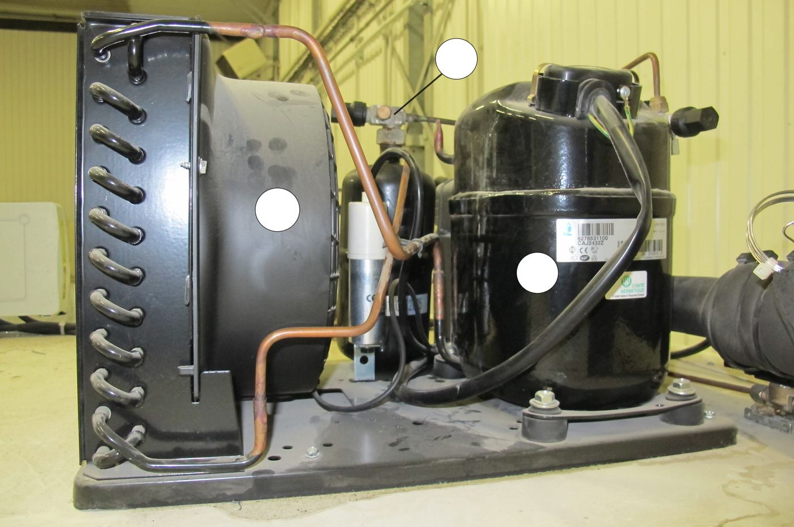
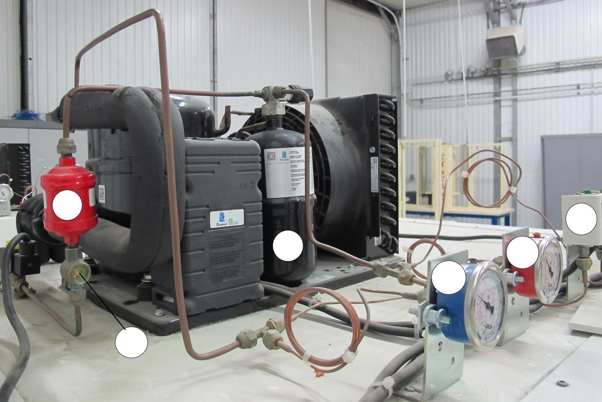
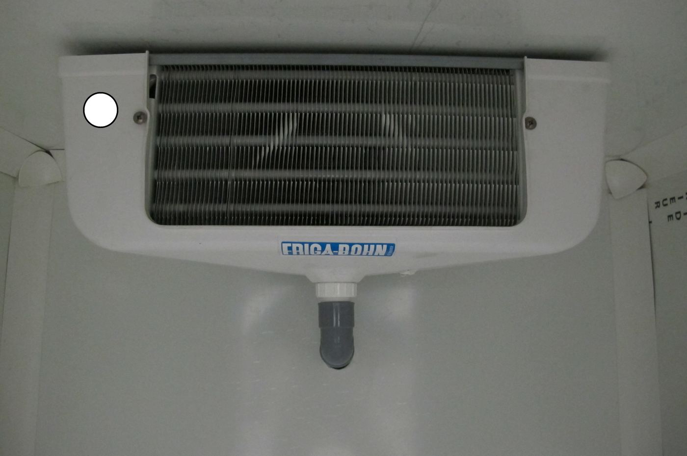
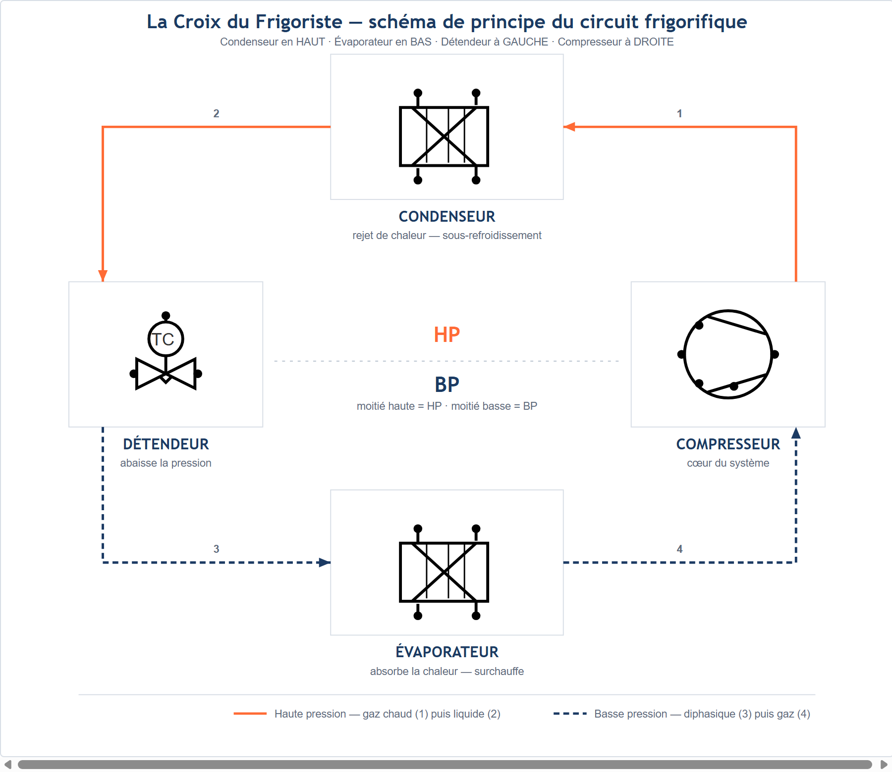

Pas de tâche d'atelier ce jour — cours en classe entière
Ce que je vais apprendre
Reconnaître et nommer les composants d'une vraie installation frigorifique, au-delà des 4 organes déjà connus, et dire à quoi sert chacun
Savoir-être
Observer avant de nommer · être honnête dans mon auto-positionnement
Compétence
Appui — aucune compétence positionnée ce cours enrichit le vocabulaire technique utilisé dans les modules ateliers de S3 (cuivre, brasage, électricité)
Accroche — le pavillon du chantier
Le pavillon du chantier va bientôt recevoir un climatiseur. Avant l'installation, il faut savoir reconnaître
les éléments d'une vraie installation frigorifique — pas seulement les 4 organes vus en S1, mais tous les autres
composants qui les accompagnent sur une machine réelle.

Un groupe de condensation réel, photographié en atelier. D'après : TP « Les composants frigorifiques », F. Henninot.
Question de départ — Regardez cette photo. Vous reconnaissez sûrement le
condenseur (le bloc à ailettes avec le ventilateur, à gauche) et le compresseur (le gros cylindre
noir, à droite) : ce sont 2 des 4 organes de la croix du frigoriste, vus en S1. Mais il y a beaucoup d'autres
pièces sur cette photo : tuyaux, raccords, petits boîtiers... D'après vous, combien d'éléments différents
pouvez-vous compter en tout sur cette photo, en plus du compresseur et du condenseur ? Notez votre nombre, même
approximatif.
Ce que vous savez déjà (rappel S1)
Une machine qui produit du froid fonctionne toujours avec 4 organes
principaux, représentés en croix : le détendeur à GAUCHE, le compresseur à DROITE, le
condenseur en HAUT, l'évaporateur en BAS. Cette convention ne change jamais. Aujourd'hui, vous
allez découvrir tous les autres composants d'une vraie installation : ceux qui protègent le circuit,
qui le contrôlent, ou qui aident le professionnel à intervenir dessus.
Vous allez circuler par petits groupes sur 4 postes. Chaque poste montre une
photo réelle d'une installation frigorifique (et, si disponibles à l'atelier, de vrais composants à
manipuler). Des cercles blancs repèrent les composants à étudier sur chaque photo. Consigne unique à
chaque poste : observez avant de nommer — décrivez ce que vous voyez (forme, couleur, taille, position),
même si vous ne connaissez pas encore le nom du composant. Les noms officiels seront donnés ensuite, en mise en
commun.
Poste 1 — le groupe compresseur/condenseur (vue 1)
3 repères sur cette photo.
Repère
Ce que j'observe (avant de nommer)
Cercle en haut à droite, relié par un trait à un petit raccord
Cercle au centre, sur la roue à ailettes noire (le ventilateur)
Cercle en bas à droite, sur le gros cylindre noir
Poste 2 — le groupe compresseur/condenseur, avec les manomètres (vue 2)

6 repères sur cette photo.
Repère
Ce que j'observe (avant de nommer)
Cercle sur le cylindre rouge (à gauche)
Cercle sur le cylindre noir (au centre)
Cercle en bas à gauche, relié par un trait à un petit raccord
Cercle en haut à gauche, relié par un trait à un raccord en laiton
Cercle en bas à droite, sur un petit boîtier jaune et noir
Cercle en haut à droite, relié par un trait à un tube isolé noir
Poste 4 — l'évaporateur (vue 4)

1 repère sur cette photo — un évaporateur ventilé de chambre froide.
Repère
Ce que j'observe (avant de nommer)
Cercle en haut à gauche du bloc blanc
Mise en commun — Après les 4 postes, le professeur donne les 13 noms
officiels. Recopiez-les dans le tableau ci-dessous, dans l'ordre où votre groupe les a rencontrés (ce n'est
pas grave si l'ordre n'est pas 1, 2, 3...).
Exercice 1 — associer chaque composant à sa fonction
Reliez (ou notez la lettre dans la case) chaque composant à la phrase qui décrit sa
fonction.
Composant
Fonction (lettre)
Compresseur
Condenseur
Détendeur thermostatique
Évaporateur
Réservoir de liquide
Filtre déshydrateur
Voyant liquide
Électrovanne
Pressostat combiné
Fonctions à associer
A. Aspire le fluide et le comprime : mise en circulation du fluide dans tout le circuit.
B. Échangeur qui refroidit le gaz chaud jusqu'à le rendre liquide.
C. Abaisse brusquement la pression du liquide et le vaporise.
D. Échangeur qui transforme le liquide en gaz (c'est ici que naît le froid).
E. Stocke le fluide frigorigène et compense les variations de volume, y compris lors d'une intervention.
F. Supprime l'humidité, neutralise les acides, filtre les fines particules du circuit.
G. Permet d'observer le fluide : détecte l'humidité, montre les bulles (manque de fluide).
H. Agit sur le débit de fluide dans le circuit grâce à un signal électrique.
I. Contrôle les pressions haute et basse : élément de sécurité et de régulation.
Exercice 2 — je propose une hypothèse
Pour les 4 composants suivants, ce cours ne donne pas encore de fonction officielle
détaillée. À partir de ce que vous avez observé aux postes (forme, position sur le circuit, nom du composant),
proposez une fonction probable. Ce sera validé et complété en classe avec le professeur.
Exercice 3 — placer les nouveaux composants autour de la croix
Vous connaissez la croix du frigoriste (détendeur GAUCHE · compresseur DROITE ·
condenseur HAUT · évaporateur BAS). Les 9 composants découverts aujourd'hui ne sont pas de nouveaux organes :
ils s'ajoutent sur les branches de la croix, entre deux organes déjà connus. On ne redessine pas tout le
circuit en détail (ce sera pour plus tard) : on situe seulement sur quelle branche se trouve chaque
composant.

La croix du frigoriste, vue en S1 — support pour situer les nouveaux composants.
Banque de composants — réservoir de liquide · vanne de sortie du réservoir de liquide
· filtre déshydrateur · voyant liquide · électrovanne · vanne d'aspiration du compresseur · manomètre HP ·
manomètre BP · pressostat combiné
Pour chaque composant de la banque, écrivez-le dans la bonne case du tableau :
Où se trouve le composant ?
Composants (à écrire)
Branche condenseur → détendeur (la ligne liquide, entre le condenseur et le détendeur)
Branche évaporateur → compresseur (la ligne d'aspiration, entre l'évaporateur et le compresseur)
Au niveau du compresseur (surveillance des pressions)
Aide : le réservoir stocke le liquide juste
après le condenseur ; le filtre et le voyant surveillent ce même liquide avant qu'il n'arrive au détendeur ;
les manomètres et le pressostat sont toujours placés là où on veut connaître la pression, donc près du
compresseur (aspiration et refoulement).
Complétez ce tableau avec la correction donnée en classe : c'est votre trace écrite,
à garder pour vous aider en atelier.
Composant
Fonction (en une phrase)
Compresseur
Condenseur
Détendeur thermostatique
Évaporateur
Réservoir de liquide
Vanne de sortie du réservoir de liquide
Filtre déshydrateur
Voyant liquide
Électrovanne
Manomètre haute pression (HP)
Manomètre basse pression (BP)
Pressostat combiné
Vanne d'aspiration du compresseur
Auto-positionnement
Échelle FrigorX : 0 Non évalué · 1 Non acquis · 2 En cours
d'acquisition · 3 Acquis · 4 Parfaitement maîtrisé. Ce module est un appui : aucune compétence n'est
positionnée, la grille sert uniquement de repère personnel.
Ce que je sais faire
0 Non évalué
1 Non acquis
2 En cours d'acquisition
3 Acquis
4 Parfaitement maîtrisé
Nommer les 13 composants d'une installation frigorifique réelle et donner la fonction de chacun Appui — non noté
Compétence non observée ce jour.
Je ne reconnais pas les composants, même avec les 4 organes déjà connus.
Je reconnais et je nomme une partie des composants, avec de l'aide.
Je nomme seul(e) les 13 composants et je donne leur fonction avec ma fiche mémo.
Comme « Acquis », et je peux expliquer où chaque composant se situe sur la croix du frigoriste.
Savoir-être — j'observe avant de nommer, je suis honnête dans mon auto-positionnement
Non observé.
Je nomme avant d'observer, je recopie sans réfléchir.
J'observe mais j'ai besoin d'un rappel pour ne pas répondre trop vite.
J'observe avant de nommer, je remplis mon auto-positionnement seul(e) et honnêtement.
Comme « Acquis », et j'aide un camarade de mon poste à observer avant de nommer.
Nommer les composants et donner leur fonction :
01234
Ce cours n'est pas noté sur École Directe : il
enrichit le vocabulaire technique que vous retrouverez dans les ateliers de cuivre, de brasage et d'électricité
de la séquence S3, puis sur le chantier du pavillon.
D'après : « TP 02 — Les
composants frigorifiques » et son corrigé (F. Henninot, C1-Communiquer, 02_CAP-IFCA) ; photos de l'installation
extraites du TP source ; schéma « La Croix du Frigoriste » (F. Henninot, 2026), convention identique à S1-T1.
Les fonctions des composants sont reprises telles que données dans le corrigé source ; les composants pour
lesquels le corrigé source ne donne pas de fonction détaillée (vanne de sortie du réservoir, manomètres HP/BP,
vanne d'aspiration du compresseur) sont travaillés en hypothèse (exercice 2), à valider par le professeur.